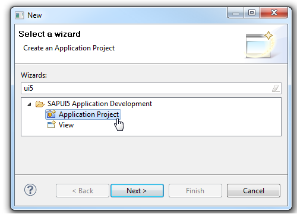

Create a SAPUI5 Application Project with Maven (internal)
You have installed Eclipse version 4.2 (Juno) or newer.
The Maven Support for SAPUI5 Application Development feature is installed in your Eclipse installation.
Before you import an existing Maven project, make sure that you have synchronized the Maven project via your usual Team Provider, for example Git. The Maven project must have packaging type var and have a dependency to the SAPUI5 core (groupId:com.sap.ui5, artefactId:core).
Proceed as follows:
Import the existing Maven project in the Eclipse IDE by choosing  File
File  Import Maven Existing Maven Projects
Import Maven Existing Maven Projects  .
.
After the import is finished:
-
An Eclipse project based on your Maven settings has been created.
-
SAPUI5 Application Tools has been configured.
-
The Java build path is left completely to Maven control.
-
The SAPUI5 library container, if available, is automatically added to the JavaScript include path.
-
The JavaScript code completion for SAPUI5 controls is available, see JavaScript Code Completion.
-
You can use the view wizard.
-
You can use the Web App preview.
To create a new application, proceed as follows:
Start th New SAPUI5 Application Project wizard in Eclipse IDE by choosing
 Nw Other... SAPUI5 Application Development Application Project .Fill in the following project-related data:
-
Project name
-
Optional: Location; default location is set to current workspace
-
Set target device to "Desktop" (default) or "Mobile".
-
Specifiy if you want to create an initial view directly or later with the SAPUI5 Application View wizard.
-
Select the With Maven Support checkbox.
-
-
Follow the steps and explanations in the Application Creation wizard.
After you have finished the wizard
-
a new dynamic web project has been created; all relevant files have been created in the following folder: src/main/webapp
-
a pom.xml file has been created that references the com.sap.ui5:maven-webapp-pom and that has a dependency on com.sap.ui5:resource, com.sap.ui5:utils, com.sap.ui5:core, com.sap.ui5:commons, or com.sap.ui5:mobile, depending on the target device in the currently installed SAPUI5 version
-
a prefilled index.html file has been created; if the target device is a desktop, it contains the sap.ui.commons lib and th sap_goldreflection theme in the boostrap. Else it contains sap.m lib and sap_mvi theme for a mobile target device.
-
web.xml has been created, containing settings for ResourceServlet and SimpleProxyServlet; the use of SimpleProxyServlet is restricted to localhost. It is only intended for testing purposes and not for productive use
-
Java build path is left completely to Maven control; SAPUI5 class path container (if available) has automatically been added to the JavaScript include path
-
page index.html is opened in the standard editor
-
JavaScript code completion for SAPUI5 controls is available inside the JavaScript block of the index.html.
-
an automatic switch to the J2EE perspective is performed
-
If you have selected Create an Initial View on the first page of the SAPUI5 Application Project wizard, a view and a view controller have been created. Also, the coding to call the view has been added to the index.html, if mobile target device was selected. Additionally, special coding instantiating sap.m.App and sap.m.Page has been generated
Adjust the maven groupId and version to suit your project's needs.